Developing inside a Container
The Visual Studio Code Remote - Containers extension lets you use a Docker container as a full-featured development environment. It allows you to open any folder inside (or mounted into) a container and take advantage of Visual Studio Code's full feature set. A devcontainer.json file in your project tells VS Code how to access (or create) a development container with a well-defined tool and runtime stack. This container can be used to run an application or to separate tools, libraries, or runtimes needed for working with a codebase.
Workspace files are mounted from the local file system or copied or cloned into the container. Extensions are installed and run inside the container, where they have full access to the tools, platform, and file system. This means that you can seamlessly switch your entire development environment just by connecting to a different container.

This lets VS Code provide a local-quality development experience — including full IntelliSense (completions), code navigation, and debugging — regardless of where your tools (or code) are located.
Getting started
Note: After reviewing this topic, you can get started with the introductory Containers tutorial.
System requirements
Local:
- Windows: Docker Desktop 2.0+ on Windows 10 Pro/Enterprise. Windows 10 Home (2004+) requires Docker Desktop 2.3+ and the WSL 2 back-end. (Docker Toolbox is not supported. Windows container images are not supported.)
- macOS: Docker Desktop 2.0+.
- Linux: Docker CE/EE 18.06+ and Docker Compose 1.21+. (The Ubuntu snap package is not supported.)
Containers:
- x86_64 / ARMv7l (AArch32) / ARMv8l (AArch64) Debian 9+, Ubuntu 16.04+, CentOS / RHEL 7+
- x86_64 Alpine Linux 3.9+
Other glibc based Linux containers may work if they have needed Linux prerequisites.
Installation
To get started, follow these steps:
Install and configure Docker for your operating system.
Windows / macOS:
Install Docker Desktop for Windows/Mac.
If you are using WSL 2 on Windows, to enable the Windows WSL 2 back-end: Right-click on the Docker taskbar item and select Settings. Check Use the WSL 2 based engine and verify your distribution is enabled under Resources > WSL Integration.
Right-click on the Docker task bar item, select Settings and update Resources > File Sharing with any locations your source code is kept. See tips and tricks for troubleshooting. This option is not available if you have enabled the WSL 2 back-end in the step above.
Linux:
Follow the official install instructions for Docker CE/EE for your distribution. If you are using Docker Compose, follow the Docker Compose directions as well.
Add your user to the
dockergroup by using a terminal to run:sudo usermod -aG docker $USERSign out and back in again so your changes take effect.
Install Visual Studio Code or Visual Studio Code Insiders.
Install the Remote Development extension pack.
Working with Git?
Here are two tips to consider:
- If you are working with the same repository both locally in Windows and inside a container, be sure to set up consistent line endings. See tips and tricks for details.
- If you clone using a Git credential manager, your container should already have access to your credentials! If you use SSH keys, you can also opt in to sharing them. See Sharing Git credentials with your container for details.
Working with Containers
The Remote - Containers extension supports two primary operating models:
- You can use a container as your full-time development environment.
- You can attach to a running container to inspect it.
Quick start: Try a development container
The easiest way to get started is to try one of the sample development containers. The Containers tutorial will walk you through setting up Docker and the Remote - Containers extension and let you select a sample:
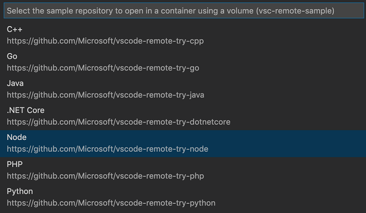
Quick start: Open an existing folder in a container
This quick start covers how to set up a dev container for an existing project to use as your full-time development environment using existing source code on your filesystem. Follow these steps:
Start VS Code, run the Remote-Containers: Open Folder in Container... command from the Command Palette (
kbstyle(F1)) or quick actions Status bar item, and select the project folder you would like to set up the container for.Tip: If you want to edit the container's contents or settings before opening the folder, you can run Remote-Containers: Add Development Container Configuration Files... instead.

Now pick a starting point for your dev container. You can either select a base dev container definition from a filterable list, or use an existing Dockerfile or Docker Compose file if one exists in the folder you selected.
Note: When using Alpine Linux containers, some extensions may not work due to
glibcdependencies in native code inside the extension.
The list will be automatically sorted based on the contents of the folder you open. Note the dev container definitions displayed come from the vscode-dev-containers repository. You can browse the
containersfolder of that repository to see the contents of each definition.After picking the starting point for your container, VS Code will add the dev container configuration files to your project (
.devcontainer/devcontainer.json).The VS Code window will reload and start building the dev container. A progress notification provides status updates. You only have to build a dev container the first time you open it; opening the folder after the first successful build will be much quicker.

After the build completes, VS Code will automatically connect to the container.
You can now interact with your project in VS Code just as you could when opening the project locally. From now on, when you open the project folder, VS Code will automatically pick up and reuse your dev container configuration.
Tip: Want to use a remote Docker host? See the Advanced Containers article for details on setup.
While using this approach to bind mount the local filesystem into a container is convenient, it does have some performance overhead on Windows and macOS. There are some techniques that you can apply to improve disk performance, or you can open a repository in a container using a isolated container volume instead.
Open a WSL 2 folder in a container on Windows
If you are using Windows Subsystem for Linux v2 (WSL 2) and have enabled Docker Desktop's WSL 2 back-end, you can work with source code stored inside WSL!
Once the WSL 2 engine is enabled, you can either:
- Use the Remote-Containers: Reopen Folder in Container command from a folder already opened using the Remote - WSL extension.
- Select Remote-Containers: Open Folder in Container... from the Command Palette (
kbstyle(F1)) and choose a WSL folder using the local\\wsl$share (from the Windows side).
The rest of the quick start applies as-is! You can learn more about the Remote - WSL extension in its documentation.
Open an existing workspace in a container
You can also follow a similar process to open a VS Code multi-root workspace in a single container if the workspace only references relative paths to sub-folders of the folder the .code-workspace file is in (or the folder itself).
You can either:
- Use the Remote-Containers: Open Workspace in Container... command.
- Use File > Open Workspace... once you have opened a folder that contains a
.code-workspacefile in a container.
Once connected, you may want to add the .devcontainer folder to the workspace so you can easily edit its contents if it is not already visible.
Also note that, while you cannot use multiple containers for the same workspace in the same VS Code window, you can use multiple Docker Compose managed containers at once from separate windows.
Quick start: Open a Git repository or GitHub PR in an isolated container volume
While you can open a locally cloned repository in a container, you may want to work with an isolated copy of a repository for a PR review or to investigate another branch without impacting your work.
Repository Containers use isolated, local Docker volumes instead of binding to the local filesystem. In addition to not polluting your file tree, local volumes have the added benefit of improved performance on Windows and macOS. (See Advanced Configuration for information on how to use these types of volumes in other scenarios.)
For example, follow these steps to open one of the "try" repositories in a Repository Container:
Start VS Code and run Remote-Containers: Clone Repository in Container Volume... from the Command Palette (
kbstyle(F1)).Enter
microsoft/vscode-remote-try-node(or one of the other "try" repositories), a Git URI, a GitHub branch URL, or a GitHub PR URL in the input box that appears and presskbstyle(Enter).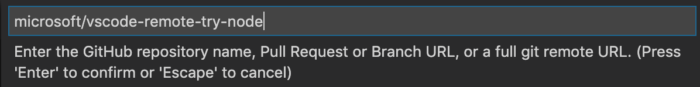
Tip: If you choose a private repository, you may want to setup a credential manager or add your SSH keys to your SSH agent. See Sharing Git credentials with your container.
If your repository does not have a
.devcontainer/devcontainer.jsonfile in it, you'll be asked to pick a starting point from a filterable list or an existing Dockerfile or Docker Compose file (if one exists).Note: When using Alpine Linux containers, some extensions may not work due to
glibcdependencies in native code inside the extension.The list will be automatically sorted based on the contents of the folder you open. Note the dev container definitions displayed come from the vscode-dev-containers repository. You can browse the
containersfolder of that repository to see the contents of each definition.The VS Code window (instance) will reload, clone the source code, and start building the dev container. A progress notification provides status updates.
If you pasted in a GitHub pull request URL in step 2, the PR will be automatically checked out and the GitHub Pull Requests extension will be installed in the container. The extension provides additional PR related features like a PR explorer, interacting with PR comments inline, and status bar visibility.
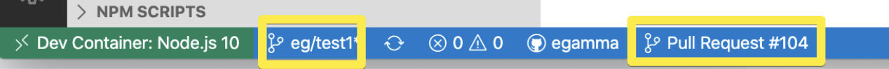
After the build completes, VS Code will automatically connect to the container. You can now work with the repository source code in this independent environment as you would if you had cloned the code locally.
Note that if the container fails to come up due to something like a Docker build error, you can select Reopen in Recovery Container in the dialog that appears to go into a "recovery container" that allows you to edit your Dockerfile or other content. This opens the docker volume with the cloned repository in a minimal container and shows you the creation log. Once you are done fixing, use Reopen in Container to retry.
Tip: Want to use a remote Docker host? See the Advanced Containers article for details on setup.
Trusting your Workspace
Visual Studio Code takes security seriously and wants to help you safely browse and edit code no matter the source or original authors. The Workspace Trust feature lets you decide whether your project folders should allow or restrict automatic code execution.
The Remote - Containers extension has adopted Workspace Trust. Depending on how you open and interact with your source code, you'll be prompted to decide if you trust the code you're editing or executing at different points.
Reopen folder in container
Setting up a dev container for an existing project requires trusting the local (or WSL) folder. You will be asked to trust the local (or WSL) folder before the window reloads.
There are a couple of exceptions to this flow:
- When clicking on a recent entry.
- Using the Open Folder in Container command will ask for trust after the window reloads, if trust is not already given.
Attach to existing container
When attaching to an existing container, you will be asked to confirm that attaching means you trust the container. This is only confirmed once.
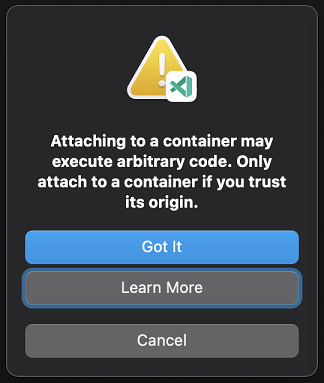
Clone repository in a volume
When cloning a repository in a container volume, you are asked to confirm that cloning a repository means you trust the repository. This is only confirmed once.
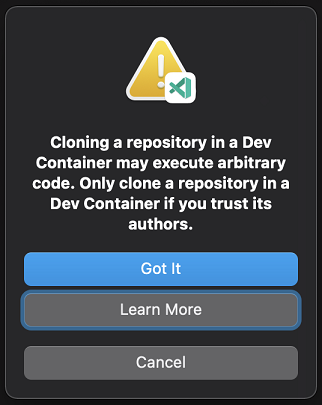
Inspect volume
Inspecting a volume starts in Restricted Mode, and you can trust the folder inside the container.
Docker daemon running remotely
This implies trusting the machine the Docker daemon runs on. There are no additional prompts to confirm (only those listed for the local/WSL case above).
Create a devcontainer.json file
VS Code's container configuration is stored in a devcontainer.json file. This file is similar to the launch.json file for debugging configurations, but is used for launching (or attaching to) your development container instead. You can also specify any extensions to install once the container is running or post-create commands to prepare the environment. The dev container configuration is either located under .devcontainer/devcontainer.json or stored as a .devcontainer.json file (note the dot-prefix) in the root of your project.
You can use any image, Dockerfile, or set of Docker Compose files as a starting point. Here is a simple example that uses one of the pre-built VS Code Development Container images:
{
"image": "mcr.microsoft.com/vscode/devcontainers/typescript-node:0-12",
"forwardPorts": [ 3000 ],
"extensions": [
"dbaeumer.vscode-eslint"
]
}
Selecting the Remote-Containers: Add Development Container Configuration Files... command from the Command Palette (kbstyle(F1)) will add the needed files to your project as a starting point, which you can further customize for your needs. The command lets you pick a pre-defined container configuration from a list based on your folder's contents, reuse an existing Dockerfile, or reuse an existing Docker Compose file.
To learn more about creating devcontainer.json files, see Create a Development Container.
Inspecting volumes
Occasionally you may run into a situation where you are using a Docker named volume that you want to inspect or make changes in. You can use VS Code to work with these contents without creating or modifying devcontainer.json file by selecting the Remote-Containers: Explore a Volume in a Development Container... from the Command Palette (kbstyle(F1)).
You can also inspect your volumes in the Remote Explorer. Make sure you have Containers selected in the dropdown, then you'll notice a Dev Volumes section. You can right-click on a volume to inspect its creation information, like when the volume was created, what repo was cloned into it, and the mountpoint. You can also explore it in a dev container.
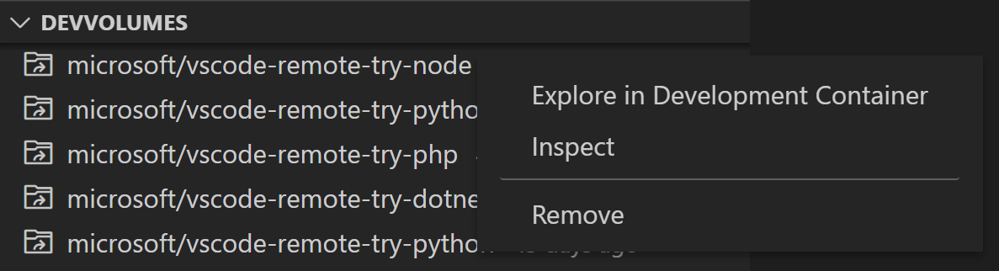
If you have the Docker extension installed, you can right-click on a volume in the Volumes section of the Docker Explorer and select Explore in a Development Container.
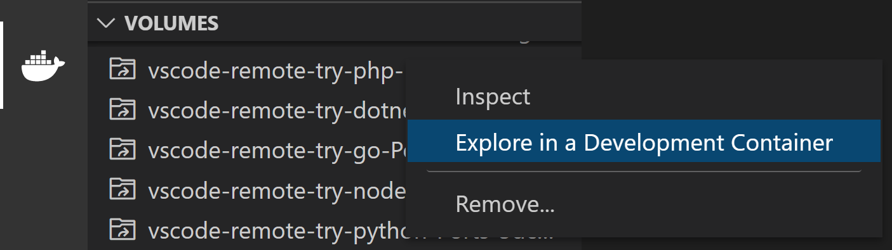
Managing extensions
VS Code runs extensions in one of two places: locally on the UI / client side, or in the container. While extensions that affect the VS Code UI, like themes and snippets, are installed locally, most extensions will reside inside a particular container. This allows you to install only the extensions you need for a given task in a container and seamlessly switch your entire tool-chain just by connecting to a new container.
If you install an extension from the Extensions view, it will automatically be installed in the correct location. You can tell where an extension is installed based on the category grouping. There will be a Local - Installed category and also one for your container.
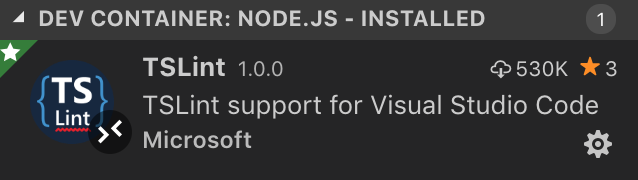

Note: If you are an extension author and your extension is not working properly or installs in the wrong place, see Supporting Remote Development for details.
Local extensions that actually need to run remotely will appear Disabled in the Local - Installed category. Select Install to install an extension on your remote host.
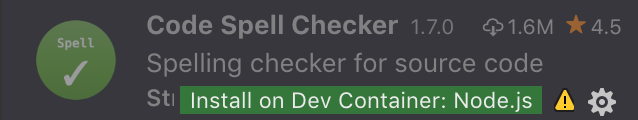
You can also install all locally installed extensions inside the Dev Container by going to the Extensions view and selecting Install Local Extensions in Dev Container: [Name] using the cloud button at the right of the Local - Installed title bar. This will display a dropdown where you can select which locally installed extensions to install in your container.
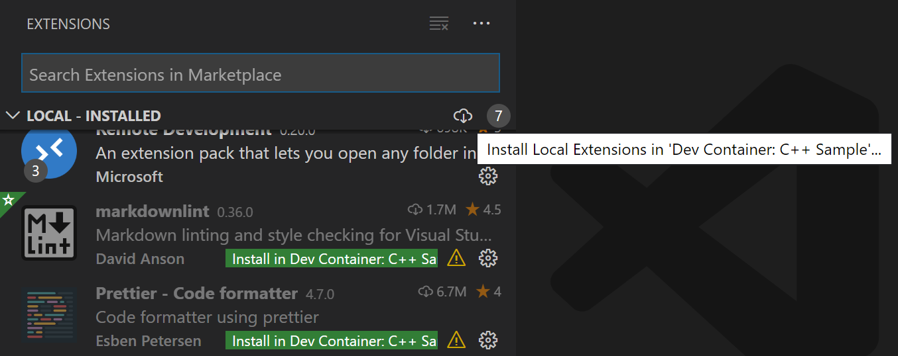
However, some extensions may require you to install additional software in the container. Consult extension documentation for details if you encounter issues.
Adding an extension to devcontainer.json
While you can edit your devcontainer.json file by hand to add a list of extension IDs, you can also right-click on any extension in the Extensions view and select Add to devcontainer.json.
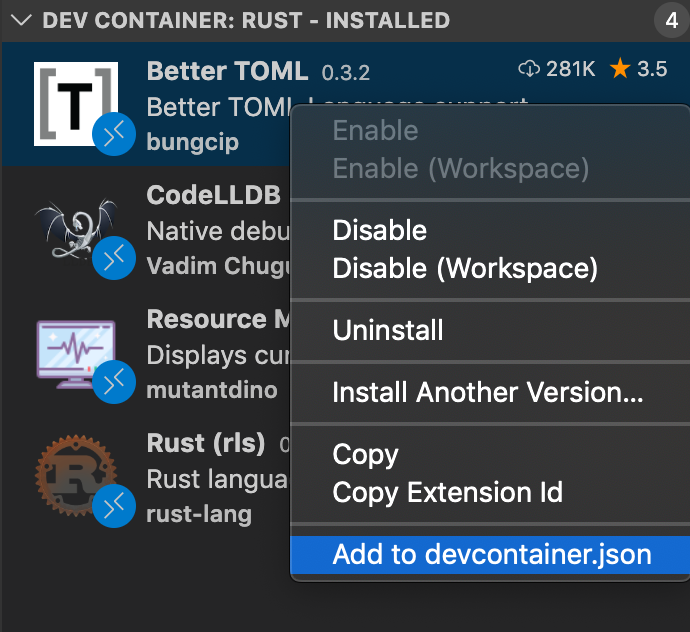
"Always installed" extensions
If there are extensions that you would like always installed in any container, you can update the remote.containers.defaultExtensions User setting. For example, if you wanted to install the GitLens and Resource Monitor extensions, you would specify their extension IDs as follows:
"remote.containers.defaultExtensions": [
"eamodio.gitlens",
"mutantdino.resourcemonitor"
]
Advanced: Forcing an extension to run locally or remotely
Extensions are typically designed and tested to either run locally or remotely, not both. However, if an extension supports it, you can force it to run in a particular location in your settings.json file.
For example, the setting below will force the Docker extension to run locally and Debugger for Chrome extension to run remotely instead of their defaults:
"remote.extensionKind": {
"ms-azuretools.vscode-docker": [ "ui" ],
"msjsdiag.debugger-for-chrome": [ "workspace" ]
}
A value of "ui" instead of "workspace" will force the extension to run on the local UI/client side instead. Typically, this should only be used for testing unless otherwise noted in the extension's documentation since it can break extensions. See the article on Supporting Remote Development for details.
Forwarding or publishing a port
Containers are separate environments, so if you want to access a server, service, or other resource inside your container, you will need to either "forward" or "publish" the port to your host. You can either configure your container to always expose these ports or just forward them temporarily.
Always forwarding a port
You can specify a list of ports you always want to forward when attaching or opening a folder in container by using the forwardPorts property in devcontainer.json.
"forwardPorts": [3000, 3001]
Simply reload / reopen the window and the setting will be applied when VS Code connects to the container.
Temporarily forwarding a port
If you need to access a port that you didn't add to devcontainer.json or publish in your Docker Compose file, you can temporarily forward a new port for the duration of the session by running the Forward a Port command from the Command Palette (kbstyle(F1)).
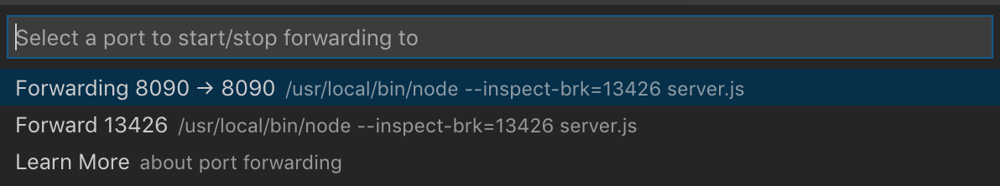
After selecting a port, a notification will tell you the localhost port you should use to access the port in the container. For example, if you forwarded an HTTP server listening on port 3000, the notification may tell you that it was mapped to port 4123 on localhost. You can then connect to this remote HTTP server using http://localhost:4123.
This same information is available in the Forwarded Ports section of the Remote Explorer if you need to access it later.
If you would like VS Code to remember any ports you have forwarded, check Remote: Restore Forwarded Ports in the Settings editor (kb(workbench.action.openSettings)) or set "remote.restoreForwardedPorts": true in settings.json.

Publishing a port
Docker has the concept of "publishing" ports when the container is created. Published ports behave very much like ports you make available to your local network. If your application only accepts calls from localhost, it will reject connections from published ports just as your local machine would for network calls. Forwarded ports, on the other hand, actually look like localhost to the application. Each can be useful in different situations.
To publish a port, you can:
Use the appPort property: If you reference an image or Dockerfile in
devcontainer.json, you can use theappPortproperty to publish ports to the host."appPort": [ 3000, "8921:5000" ]Use the Docker Compose ports mapping: The ports mapping can easily be added your
docker-compose.ymlfile to publish additional ports.ports: - "3000" - "8921:5000"
In each case, you'll need to rebuild your container for the setting to take effect. You can do this by running the Remote-Containers: Rebuild Container command in the Command Palette (kbstyle(F1)) when you are connected to the container.
Opening a terminal
Opening a terminal in a container from VS Code is simple. Once you've opened a folder in a container, any terminal window you open in VS Code (Terminal > New Terminal) will automatically run in the container rather than locally.
You can also use the code command line from this same terminal window to perform a number of operations such as opening a new file or folder in the container. Type code --help to learn what options are available from the command line.

Debugging in a container
Once you've opened a folder in a container, you can use VS Code's debugger in the same way you would when running the application locally. For example, if you select a launch configuration in launch.json and start debugging (kb(workbench.action.debug.start)), the application will start on the remote host and attach the debugger to it.
See the debugging documentation for details on configuring VS Code's debugging features in .vscode/launch.json.
Container specific settings
VS Code's local user settings are also reused when you are connected to a dev container. While this keeps your user experience consistent, you may want to vary some of these settings between your local machine and each container. Fortunately, once you have connected to a container, you can also set container-specific settings by running the Preferences: Open Remote Settings command from the Command Palette (kbstyle(F1)) or by selecting the Remote tab in the Settings editor. These will override any local settings you have in place whenever you connect to the container.
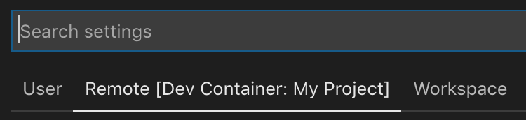
Default container specific settings
You can include defaults for container specific settings in devcontainer.json using the settings property. These values will be automatically placed in the container specific settings file inside the container once it is created.
For example, adding this to .devcontainer/devcontainer.json will set the Java home path:
"settings": {
"java.home": "/docker-java-home"
}
Since this just establishes the default, you are still able to change the settings as needed once the container is created.
Sharing Git credentials with your container
The Remote - Containers extension provides out of box support for using local Git credentials from inside a container. In this section, we'll walk through the two supported options.
If you do not have your user name or email address set up locally, you may be prompted to do so. You can do this on your local machine by running the following commands:
git config --global user.name "Your Name"
git config --global user.email "your.email@address"
The extension will automatically copy your local .gitconfig file into the container on startup so you should not need to do this in the container itself.
Using a credential helper
If you use HTTPS to clone your repositories and have a credential helper configured in your local OS, no further setup is required. Credentials you've entered locally will be reused in the container and vice versa.
Using SSH keys
There are some cases when you may be cloning your repository using SSH keys instead of a credential helper. To enable this scenario, the extension will automatically forward your local SSH agent if one is running.
You can add your local SSH keys to the agent if it is running by using the ssh-add command. For example, run this from a terminal or PowerShell:
ssh-add $HOME/.ssh/github_rsa
On Windows and Linux, you may get an error because the agent is not running (macOS typically has it running by default). Follow these steps to resolve the problem:
Windows:
Start a local Administrator PowerShell and run the following commands:
# Make sure you're running as an Administrator
Set-Service ssh-agent -StartupType Automatic
Start-Service ssh-agent
Get-Service ssh-agent
Linux:
First, start the SSH Agent in the background by running the following in a terminal:
eval "$(ssh-agent -s)"
Then add these lines to your ~/.bash_profile or ~/.zprofile (for Zsh) so it starts on login:
if [ -z "$SSH_AUTH_SOCK" ]; then
# Check for a currently running instance of the agent
RUNNING_AGENT="`ps -ax | grep 'ssh-agent -s' | grep -v grep | wc -l | tr -d '[:space:]'`"
if [ "$RUNNING_AGENT" = "0" ]; then
# Launch a new instance of the agent
ssh-agent -s &> $HOME/.ssh/ssh-agent
fi
eval `cat $HOME/.ssh/ssh-agent`
fi
Sharing GPG Keys
If want to GPG sign your commits, you can share your local keys with your container as well. You can find out about signing using a GPG key in GitHub's documentation.
If you do not have GPG set up, you can configure it for your platform:
- On Windows, you can install Gpg4win.
- On macOS, you can install GPG Tools.
- On Linux, locally install the
gnupg2package using your system's package manger. - On WSL:
- Install Gpg4win on the Windows side.
- Install socat in your WSL distro.
sudo apt install socat - Install
gpgin your WSL distro.sudo apt install gpg - Register a
pinentryGUI in your WSL distro.echo pinentry-program /mnt/c/Program\ Files\ \(x86\)/Gpg4win/bin/pinentry.exe > ~/.gnupg/gpg-agent.conf - Reload the
gpgagent in WSL.gpg-connect-agent reloadagent /bye
Next, install gnupg2 in your container by updating your Dockerfile.
For example:
RUN apt-get update && apt-get install gnupg2 -y
Or if running as a non-root user:
RUN sudo apt-get update && sudo apt-get install gnupg2 -y
The next time the container starts, your GPG keys should be accessible inside the container as well.
Note: If you used
gpgpreviously in the container, you may need to run Remote-Containers: Rebuild Container for the update to take effect.
Managing containers
By default, the Remote - Containers extension automatically starts the containers mentioned in the devcontainer.json when you open the folder. When you close VS Code, the extension automatically shuts down the containers you've connected to. You can change this behavior by adding "shutdownAction": "none" to devcontainer.json.
While you can use the command line to manage your containers, you can also use the Remote Explorer. To stop a container, select Containers from the dropdown (if present), right-click on a running container, and select Stop Container. You can also start exited containers, remove containers, and remove recent folders. From the Details view, you can forward ports and open already forwarded ports in the browser.
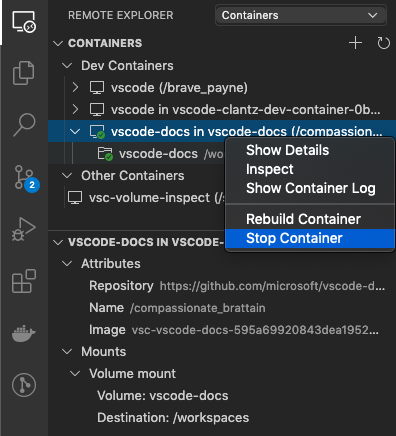
If you want to clean out images or mass-delete containers, see Cleaning out unused containers and images for different options.
Personalizing with dotfile repositories
Dotfiles are files whose filename begins with a dot (.) and typically contain configuration information for various applications. Since development containers can cover a wide range of application types, it can be useful to store these files somewhere so that you can easily copy them into a container once it is up and running.
A common way to do this is to store these dotfiles in a GitHub repository and then use a utility to clone and apply them. The Remote - Containers extension has built-in support for using these with your own containers. If you are new to the idea, take a look at the different dotfiles bootstrap repositories that exist.
To use it, add your dotfiles GitHub repository to VS Code's User Settings (kb(workbench.action.openSettings)) as follows:
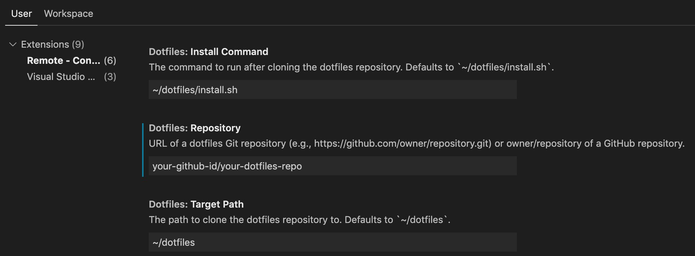
Or in settings.json:
{
"dotfiles.repository": "your-github-id/your-dotfiles-repo",
"dotfiles.targetPath": "~/dotfiles",
"dotfiles.installCommand": "~/dotfiles/install.sh"
}
From this point forward, the dotfiles repository will be used whenever a container is created.
Advanced container configuration
See the Advanced Container Configuration article for information on the following topics:
- Adding environment variables
- Adding another local file mount
- Changing or removing the default source code mount
- Improving container disk performance
- Adding a non-root user to your dev container
- Avoiding extension reinstalls on container rebuild
- Setting the project name for Docker Compose
- Using Docker or Kubernetes from inside a container
- Connecting to multiple containers at once
- Developing inside a container on a remote Docker Machine or SSH host
- Reducing Dockerfile build warnings
devcontainer.json reference
There is a full devcontainer.json reference, where you can review the file schema to help you customize your development containers and control how you attach to running containers.
Known limitations
Remote - Containers limitations
- Windows container images are not yet supported.
- Using a remote Docker Host is possible, but requires additional setup steps.
- All roots/folders in a multi-root workspace will be opened in the same container, regardless of whether there are configuration files at lower levels.
- The unofficial Ubuntu Docker snap package for Linux is not supported. Follow the official Docker install instructions for your distribution.
- Docker Toolbox on Windows is not supported.
- If you clone a Git repository using SSH and your SSH key has a passphrase, VS Code's pull and sync features may hang when running remotely. Either use an SSH key without a passphrase, clone using HTTPS, or run
git pushfrom the command line to work around the issue. - Local proxy settings are not reused inside the container, which can prevent extensions from working unless the appropriate proxy information is configured (for example global
HTTP_PROXYorHTTPS_PROXYenvironment variables with the appropriate proxy information).
See here for a list of active issues related to Containers.
Docker limitations
- First-time installs of Docker Desktop for Windows when not using the WSL 2 engine will require an additional "sharing" step to give your container access to local source code. However, this step may not work with certain AAD (email-based) identities. See Docker Desktop for Windows tips and Enabling file sharing in Docker Desktop for details and workarounds.
- You may see errors if you sign in to Docker with your email address instead of your Docker ID. This is a known issue and can be resolved by signing in with your Docker ID instead. See Docker issue #935 for details.
- If you see high CPU spikes for
com.docker.hyperkiton macOS, this may be due to a known issue with Docker for Mac. See the Docker issue for details.
See the Docker troubleshooting guide for Windows or Mac, consult Docker Support Resources for more information.
Docker Extension limitations
While the Docker extension can run both remotely and locally, if it is already installed locally, you will be unable to install in a container without first uninstalling it locally. We will address this problem in a future VS Code release.
Extension limitations
Many extensions will work inside dev containers without modification. However, in some cases, certain features may require changes. If you run into an extension issue, see here for a summary of common problems and solutions that you can mention to the extension author when reporting the issue.
In addition, while Alpine support is available, some extensions installed in the container may not work due to glibc dependencies in native code inside the extension. See the Remote Development with Linux article for details.
Common questions
I am seeing errors when trying to mount the local filesystem into a container
Right-click on the Docker task bar item. On Windows, select the Settings menu item then Resources > File Sharing and check the drive(s) where your source code is located. On macOS, select the Preferences menu item then Resources > File Sharing and make sure the folder containing your source code is under a file path specified in the list.
See Docker Desktop for Windows tips for information on workarounds to common Docker for Windows issues.
Can I use Podman instead of Docker?
Podman 1.9+ is mostly compatible with Docker's CLI commands and therefore generally does work if you update the setting Remote > Containers: Docker Path to podman on Linux.
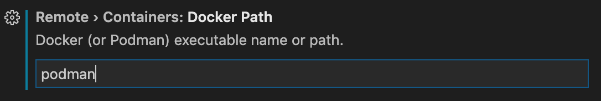
However, certain tricks like Docker-from-Docker do not work due to limitations in Podman. This affects the Remote-Containers: Try a Sample... and Remote- Containers: Clone Repository in Container Volume... commands.
Docker Compose is also not supported by Podman.
I'm seeing an error about a missing library or dependency
Some extensions rely on libraries not found in specific Docker images. For example, Visual Studio Live Share requires the installation of system-level dependencies, which are listed in their documentation. The need for these dependencies may depend on the operating system (for example, specific Linux distribution) used by your Docker image. You may need to install these dependencies during the Docker build process, by adding required commands to your Dockerfile. Search the specific extension's documentation to check for dependencies and see Installing additional software for help with resolving the problem.
Can I connect to multiple containers at once?
A VS Code window can only connect to one window currently, but you can open a new window and attach to an already running container or use a common Docker Compose file with multiple devcontainer.json files to automate the process a bit more.
Can I work with containers on a remote host?
Yes, you can either attach to a container running on a remote host or create a specialized devcontainer.json to tell VS Code how to work with your remote environment. To access the host, you can either connect to a publicly exposed Docker daemon TCP port or use SSH to tunnel into a remote VM running Docker. See Developing inside a container on a remote Docker host for details.
How can I build or deploy container images into my local Docker / Kubernetes install when working inside a container?
You can build images and deploy containers by forwarding the Docker socket and installing the Docker CLI (and kubectl for Kubernetes) in the container. See the Docker-from-Docker, Docker-from-Docker Compose, and Kubernetes-Helm dev container definitions for details.
What are the connectivity requirements for the VS Code Server when it is running in a container?
Installation of VS Code Server requires that your local machine have outbound HTTPS (port 443) connectivity to:
update.code.visualstudio.comvscode.blob.core.windows.net*.vo.msecnd.net(Azure CDN)
The Remote - Containers extensions will download VS Code Server locally and copy it to the container once connected.
You can install extensions manually without an internet connection using the Extensions: Install from VSIX... command, but if you use the extension panel or devcontainer.json to install extensions, your local machine and VS Code Server will need outbound HTTPS (port 443) access to:
marketplace.visualstudio.com*.vo.msecnd.net(Azure CDN)*.gallerycdn.vsassets.io(Azure CDN)
Finally, some extensions (like C#) download secondary dependencies from download.microsoft.com or download.visualstudio.microsoft.com. Others (like Visual Studio Live Share) may have additional connectivity requirements. Consult the extension's documentation for details if you run into trouble.
VS Code Server runs on a random port inside the container and VS Code itself uses docker exec to communicate with it over Docker's configured communication channel.
As an extension author, what do I need to do to make sure my extension works?
The VS Code extension API hides most of the implementation details of running remotely so many extensions will just work inside dev containers without any modification. However, we recommend that you test your extension in a dev container to be sure that all of its functionality works as expected. See the article on Supporting Remote Development for details.
What other resources are there that may be able to answer my question?
The following articles may help answer your question:
- Advanced Container Configuration or Tips and Tricks
- Dockerfile reference
- Docker Compose file reference
- Docker Desktop for Windows troubleshooting guide and FAQ
- Docker Desktop for Mac troubleshooting guide and FAQ
- Docker Support Resources
Questions or feedback
- See Tips and Tricks or the FAQ.
- Search on Stack Overflow.
- Add a feature request or report a problem.
- Create a development container definition for others to use.
- Contribute to our documentation or VS Code itself.
- See our CONTRIBUTING guide for details.
Next steps
- Attach to a Running Container - Attach to an already running Docker container.
- Create a Development Container - Create a custom container for your work environment.
- Advanced Containers - Find solutions to advanced container scenarios.
- devcontainer.json reference - Review the
devcontainer.jsonschema.